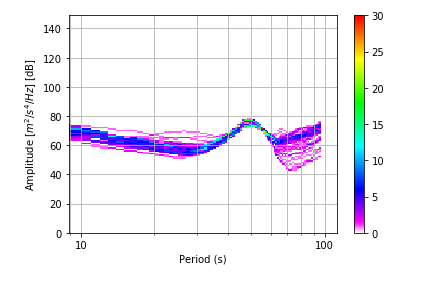

pycheron.psd.getPDF¶
-
getPDF(noise, lo=-200, hi=-49, binSize=1)[source]¶ This functions takes a noise matrix and computes a probability density function (PDF) as defined by McNamara and Boaz [1].
The McNamara and Boaz paper describes creating histograms of the discretized power levels at each frequency bin associated with a set of PSDs. THe value in each cell of the PDF matrix is the fraction of the corrected PSDs that have a power level at that frequency bin.
Note
To return a PDF matrix that matches those in the McNamara paper, use the default settings.
Parameters: - noise (numpy.ndarray) – Noise matrix returned from getNoise function
- lo (int) – Lowest frequency bin (power level in dB) for the PDF y-axis
- hi (int) – Highest frequency bin (power level in dB) for the PDF y-axis. ( Note: Python does not include the last integer, so if the highest freq you want is -50, you must input -49)
- binSize (int) – Size in dB of each bin.
Returns: Array of probability density values; rows=dB level, columns=frequencies, e.g., row1 corresponds to lowest frequency bin (e.g., if using default values -200, next row would be -199, etc.)
Return type: numpy.ndarray
Example
from pycheron.psd.psdList import psdList from pycheron.psd.psdStatistics import psdStatistics from pycheron.psd.McNamaraPSD import McNamaraPSD from pycheron.psd.McNamaraBins import McNamaraBins from pycheron.psd.getPDF import getPDF from pycheron.psd.noise.getNoise import getNoise from matplotlib.ticker import ScalarFormatter from obspy.imaging.cm import pqlx #test data data = 'test/test_data/7a_cabn_bhe.884965.tar.mseed' #reading in stream st = obspy.read(data) tr=st[0] # creating psds psd=psdList(st) # calculating psd statistics stats = psdStatistics(psd) # getting noise, frequency f,n,psd = getNoise(psd) # function parameters lo = -200 #Default hi = -51 #Default binSize = 1 #Default freq = n[0] pdf = getPDF(freq, lo, hi, binSize)
Plotting
# using outputs from above example period=1/stats[0]['noise_matrix_frequency'] pdf_rev=np.fliplr(pdf) fig1, ax1 = plt.subplots() plt.pcolor(pdf_rev,cmap=pqlx,alpha=1.0,vmin=0,vmax=30) plt.xscale('log') ax1.get_xaxis().set_major_formatter(ScalarFormatter()) ax1.grid(True,which='both') ax1.set_ylabel('Amplitude [$m^2/s^4/Hz$] [dB]') ax1.set_xlabel('Period (s)') plt.colorbar() plt.show()
References
[1] McNamara and Boaz, 2005, Seismic Noise Analysis System Using Power Spectral Density Probability Density Functions: A Stand-Alone Software Package (https://pubs.usgs.gov/of/2005/1438/pdf/OFR-1438.pdf)